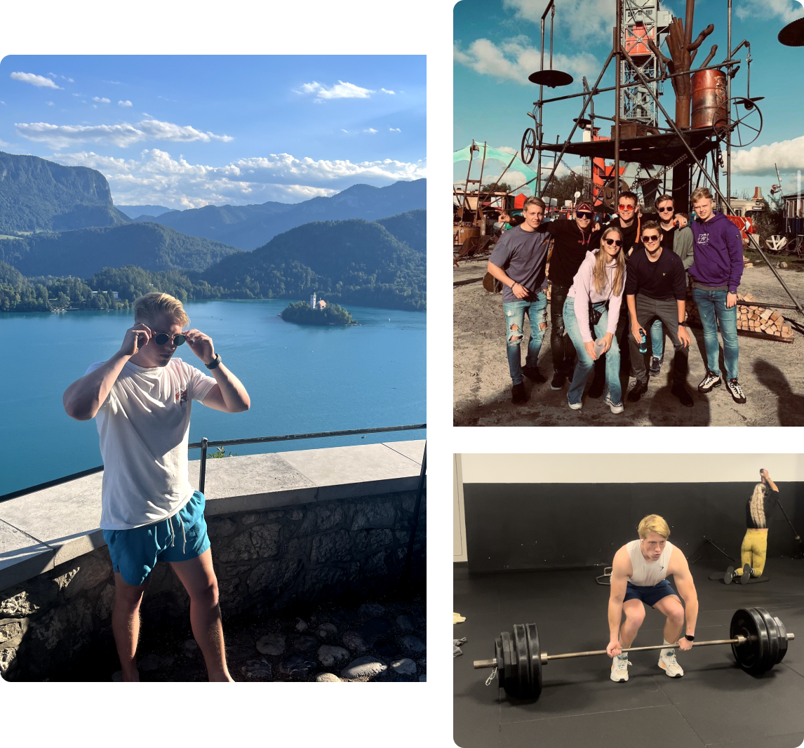

Tim Disseldorp is een ambitieuze, leergierige en spontane jongeman. Hij woont in
Heiloo en is vierentwintig jaar oud. Hij vindt fysieke en mentale gezondheid erg
belangrijk, daarom sport hij minstens zes keer per week in de sportschool.
Daarnaast houdt hij ervan om te wandelen, hardlopen in de natuur en voetbalt hij
op de zondag met zijn vrienden. Ook houdt hij ervan om in het weekend af te
spreken met zijn vrienden en soms uit te gaan of een festival te pakken.
Al sinds jongs af aan vindt Tim de geschiedenis en cultuur erg interessant en
inspirerend. Hij houdt zich steeds meer bezig met reizen en wilt steeds meer van
de wereld zien. Afgelopen jaar is hij samen met een vriend voor de eerste keer
op een Europese Roadtrip geweest. Zij hebben samen zo’n 7500 km afgelegd met een
auto door de landen: Duitsland, Tsjechië, Oostenrijk, Slovenië, Italië,
Frankrijk en Spanje. Hier zijn wij op de mooiste plekken van Europa geweest en
hebben we jongeren over de hele wereld leren kennen. Zoveel diverse culturen
gezien en met ons neus in de geschiedenisboeken gezeten. Het was een reis om
niet te vergeten. Voor de volgende trip wil ik meer richting Oost-Azië gaan om
samen met een jongenorganisatie door Indonesië te reizen. Indonesië staat bekend
om de diverse culturen, tropische regenwouden, actieve vulkanen, prachtige
meren, knalgroene rijstvelden en hagelwitte zandstranden. Maar ooit zal dit
avontuur van mijn bucketlist afgestrepen worden.
Over mij.

Mijn werk.

Regio College Sporters
Middelbare scholieren worden te weinig aangemoedigd om het sporten na de corona-crisis weer op te pakken.To The Max
Fysiek contact is door de corona-crisis onmogelijk gemaakt en daarvoor heb ik een online applicatie ontwikkeld.DTX Redesign
iusdfoisd ioudsbf sdbsduf bsdiufb sdoiboisd biusdbf uisdbf suidbf sib.